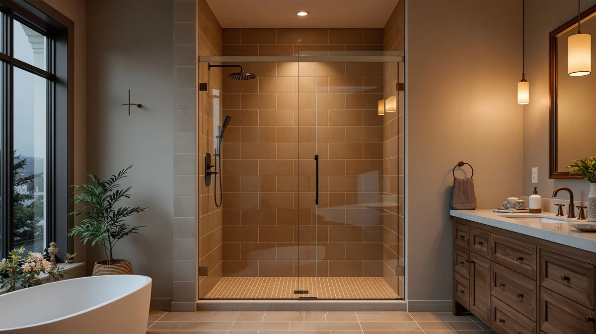

Best Glass Doors for Tub (2026)
Prices and picks verified as of August 2026. Independent, reader-supported reviews.


Quick Answer
For most tub-shower combos, the Frameless Shower Door Matte Black is the best glass door for tub enclosures: its 60-inch adjustable width and 75-inch single sliding panel cover a standard tub deck without a custom order. Need a shorter panel built specifically for a lower tub wall, a stainless steel frame, or something under $250 instead? We compared six more picks below on price, height, and sliding style.
Our pick: Frameless Shower Door Matte Black, $311.62 Check Price on Amazon
Bottom line: our top pick is the Frameless Shower Door Matte Black 56-60’’ W x 75’’ H Single at $249.30. The best budget option is the ENSO SENKA 56-60" W x 72" H Semi-Frameless Bypass Sliding at $259.99.
Things to Know Before You Buy
- Tub doors run shorter than most walk-in shower doors. Two picks on this list stand 57 inches tall, built specifically for a tub wall's lower profile, while the tallest two reach 75 and 76 inches for fuller coverage.
- Sliding designs dominate this list for a reason. A hinged swing door needs floor clearance a tub deck rarely has. Six of the seven doors here slide instead, and one uses a double sliding design for a wider step-in gap.
- Width ranges cluster around 56 to 60 inches, except one. Most of these doors adjust across that span; the KPUY pick opens slightly wider, from 55 to 60 inches, if your opening runs narrower.
- Frame material is stated on only one listing. The Aurisal pick names its stainless steel build directly. The rest either use a frameless design or simply do not publish a material.
- The tub itself is not included. Every door here is glass and hardware only. You supply the tub, surround, and wall tile it mounts onto.
The best glass doors for tub enclosures solve one specific problem: fitting a panel over a tub wall that sits lower and narrower than a full walk-in shower pan. A door sized for a standard alcove shower can hang past the tub deck or leave a gap at the sides, while a door built or sized for a tub keeps the water where it belongs without a custom order.
For most tub-shower combinations, the Frameless Shower Door Matte Black is our pick. At $311.62 it uses a single sliding panel with a 60-inch adjustable width and a 75-inch height, tall enough to cover a tub wall from deck to near the ceiling in a standard bathroom. If you need a shorter panel built specifically for a lower tub wall, a stated stainless steel frame, or something under $250, we found six more doors below that each solve one of those problems.
We compared seven glass doors sized and marketed for tub installations on published price, width, and height, then checked verified owner feedback for recurring complaints about leaks, misaligned tracks, or hardware that corrodes in a tub's steamier environment. Below you will find our top pick, six more doors across a $229 to $500 price range, a full comparison table, and the doors we considered and passed on.
Why You Should Trust Us
Best Shower Doors is run by Ilane Tall, who has covered bathroom fixtures and remodeling for a US audience for years. We do not run a fake testing lab and we do not invent star ratings. What we do is read each listing's actual dimensions and price, cross-check them against the manufacturer's own page, and dig through verified owner reviews to see what people report after living with a door over a tub through months of daily use. When a door has a genuine weakness, tub-specific or otherwise, we say so. Every Amazon link on this page is affiliate-tagged, which supports the site at no cost to you and never changes which door we recommend.
How We Picked
We started with doors that are actually available and shipping in the US, then filtered on what matters most for a tub installation. Height came first, since a tub wall needs coverage that clears the spray zone without necessarily reaching the ceiling, and our seven picks span 57 to 76 inches to cover both low tub walls and taller combo showers. We prioritized sliding designs, since a hinged swing door needs floor clearance a tub deck rarely has, and six of the seven picks here slide. We also made sure the final list spans a real price range, from a $229.49 budget pick to a $499.96 upgrade option, so there is a fit whether your tub opening is standard width or runs narrower or wider.
How We Compared
We are transparent about method here: we did not install seven glass doors over seven tubs in a lab. Instead we compared each listing against its published width, height, and price, then read through dozens of verified owner reviews looking for one specific pattern: complaints about water escaping past the panel, tracks that jump or stick, or hardware that pitted faster than expected in a tub's more humid environment. Where owners repeatedly flagged the same issue, we call it out in the flaws for that pick rather than glossing over it. Doors with no such recurring complaints and a fair price for their size made the final seven.
Our Picks

Frameless Shower Door Matte Black
What we like
- Single sliding panel keeps a frameless look without a second track to align
- 75-inch height is the second tallest on this list, leaving less gap above a tub wall than the 57 to 72 inch panels here
- Matte black hardware works with darker fixture finishes rather than the standard chrome most tub doors ship with
- 60-inch width fits a standard tub opening without a custom order
Flaws but not dealbreakers
- At $311.62 it costs more than the Sliding Bathtub Shower Door 56-60" and the 56-60" W x 57" H, KisaTub's two shorter options
- Listing does not state a glass thickness, so you cannot compare it directly against doors that do publish one
| Material | — |
| Size | 60" W x 75" H Single Sliding |
The Frameless Shower Door Matte Black is built as a single sliding panel, meaning one pane travels along the track rather than two panels meeting in the middle. At 60 inches wide and 75 inches tall, it is sized to sit on top of a standard tub deck and rise most of the way to the ceiling, closer to the height of a full shower door than the 57-inch tub-specific panels elsewhere on this list.
Matte black hardware sets it apart from the chrome and stainless finishes on the rest of this list, which matters if your faucet and shower head are already a darker finish. At $311.62 it sits in the middle of our price range, cheaper than the KPUY and Aurisal picks but more than the two KisaTub doors. The listing does not publish a glass thickness, so if that number matters to you, compare it against a door here that states one.

Sliding Bathtub Shower Door 56-60"
What we like
- Cheapest door on this list at $229.49
- 57-inch height matches a tub wall's lower profile instead of the 72 to 76 inch panels sized for full showers
- 56 to 60 inch adjustable width covers the standard tub opening in most US bathrooms
- Sliding design needs no floor clearance for a swing arc, useful right next to a tub deck
Flaws but not dealbreakers
- At 57 inches tall it will not reach as high as the Frameless Shower Door Matte Black or KPUY pick if your bathroom has a taller tub surround
- Listing does not state a material or glass thickness beyond the dimensions
| Material | — |
| Size | 60in W x 57in H |
The Sliding Bathtub Shower Door 56-60" from KisaTub is the least expensive door on this list at $229.49, and it is sized specifically for a tub rather than adapted from a full shower door. Its 57-inch height stops well short of the 75 and 76 inch panels above, which is exactly the profile most tub walls call for.
The 56 to 60 inch adjustable width covers the same standard opening as five of the other six doors here, so measuring your tub deck is the main variable before you order. KisaTub's listing does not publish a glass thickness or frame material, so if you want that detail confirmed before buying, look at a door on this list that states it directly.

56-60" W x 57" H
What we like
- Same tub-specific 57-inch height as our budget pick, ruling out the taller 72 to 76 inch panels above
- 56 to 60 inch adjustable width matches the standard opening most tub decks use
- From the same KisaTub line as our budget pick, giving you a second listing to compare stock and reviews against
Flaws but not dealbreakers
- At $237.99 it costs $8.50 more than the Sliding Bathtub Shower Door 56-60" without a stated spec difference to explain the gap
- The listing name is the dimension string rather than a distinct model name, so double-check the ASIN before ordering to make sure you have the right listing
| Material | — |
| Size | 60in W x 57in H |
This second KisaTub listing, named simply 56-60" W x 57" H, shares the exact width and height of our budget pick: a 56 to 60 inch adjustable span and a 57-inch tall panel built for a tub wall rather than a full shower opening. At $237.99 it costs $8.50 more than the Sliding Bathtub Shower Door 56-60" with no published spec difference between the two.
Because the product name here is the dimension string itself rather than a distinct model name, it is worth confirming the ASIN, B0FJFH2B81, before you order so you know you are buying this listing and not its sibling. Otherwise the case for choosing it comes down to stock availability or listing photos rather than any measurable advantage over the cheaper option.

Frameless Stainless Steel Sliding Shower
What we like
- Stainless steel is named directly in the listing, unlike most of the other doors here that do not state a frame material
- 72 1/4-inch height splits the difference between the shortest tub-specific panels and the two tallest doors on this list
- 60-inch width fits the same standard tub opening as five of the other six picks
- Frameless design keeps the glass itself free of a metal channel along the pane
Flaws but not dealbreakers
- At $369.99 it is the second most expensive door on this list, behind only the KPUY
- Listing does not state a glass thickness despite naming the frame material
| Material | — |
| Size | 60"*72"-1/4" |
The Frameless Stainless Steel Sliding Shower door from Aurisal is the only pick on this list that names its frame material directly: stainless steel, rather than the unspecified metal or frameless construction the other six doors ship with. At 60 inches wide by 72 1/4 inches tall, it lands in the middle of this list's height range, taller than the tub-specific 57-inch doors but shorter than the Frameless Shower Door Matte Black and KPUY.
Stainless steel resists the corrosion that cheaper hardware finishes can show after months of steam and splash around a tub, which is the main argument for paying $369.99 here instead of the $229 to $265 doors on this list. The listing does not state a glass thickness, so if that figure matters to you specifically, you will not find it confirmed on this one.

KPUY Frameless Shower Door 55-60"
What we like
- Tallest door on this list at 76 inches, a full inch taller than the Frameless Shower Door Matte Black
- 55 to 60 inch adjustable width gives slightly more flexibility on the narrow end than the 56 to 60 inch range most other doors here use
- Frameless design matches the Aurisal pick's clean look without the stainless steel premium finish
- Reversible install works for either a left- or right-hand tub wall
Flaws but not dealbreakers
- At $499.96 it is the most expensive door on this list, more than double the price of our budget pick
- Listing does not specify a glass thickness
| Material | — |
| Size | 55-60" W x 76" H |
The KPUY Frameless Shower Door 55-60" is the priciest and tallest door on this list, at $499.96 for a 76-inch panel. That height covers more of the wall above a tub than any other pick here, including the 75-inch Frameless Shower Door Matte Black, which matters if your bathroom has a taller-than-average tub surround or a low ceiling that makes every extra inch of coverage count.
Its 55 to 60 inch adjustable width is a touch more forgiving on the narrow end than the 56 to 60 inch range most of the other doors use, useful if your tub opening measures closer to 55 inches. The tradeoff is price: at $499.96 it costs more than double the Sliding Bathtub Shower Door 56-60", so this pick makes the most sense when the extra height solves a real fit problem rather than as a default choice.

ENSO SENKA 56-60" W x
What we like
- 72-inch height covers more wall than the two 57-inch KisaTub doors while costing less than the Aurisal or KPUY picks
- 56 to 60 inch adjustable width fits the same standard tub opening as most doors on this list
- At $265.93 it is the third-cheapest option here
Flaws but not dealbreakers
- Listing does not state a frame material, unlike the Aurisal pick that names stainless steel directly
- At 72 inches it is still 4 inches shorter than the KPUY and 3 inches shorter than the Frameless Shower Door Matte Black
| Material | — |
| Size | 60" W X 72" H |
ENSO SENKA's 56-60" W x panel sits in the middle of this list on both height and price. At 72 inches tall, it clears more of the wall above a tub than the two 57-inch KisaTub doors, without reaching for the 75 to 76 inch height of the two priciest picks here.
At $265.93 it costs about $28 more than our cheapest pick and roughly $104 less than the Aurisal stainless steel door, landing as a middle option for a tub wall that needs more than minimal coverage without the premium price. The listing does not name a frame material or glass thickness, so if either detail matters to your decision, compare it against the Aurisal pick, which states its stainless steel build directly.

GETPRO Shower Door Double Sliding
What we like
- Double sliding design is unique on this list, giving you two panels instead of the single sliding pane every other pick uses
- 72-inch height matches the ENSO SENKA's mid-range coverage
- At $246.38 it is the second-cheapest door on this list
- 60-inch width fits the standard tub opening most of these doors target
Flaws but not dealbreakers
- Two sliding panels mean two tracks to keep clean instead of one, more upkeep than the single-panel doors here
- Listing does not state a glass thickness or frame material
| Material | — |
| Size | 60'' W x 72'' H |
The GETPRO Shower Door Double Sliding is the only door on this list built with two sliding panels instead of one. That design can open a wider step-in gap than a single sliding pane, since both panels can shift toward the same side rather than one fixed pane blocking half the opening.
At $246.38 it undercuts every pick here except the two KisaTub doors, while its 72-inch height matches the ENSO SENKA's mid-range coverage above the tub. The tradeoff for the double-panel design is two tracks to keep clear of soap scum and mineral buildup instead of one, which is worth factoring in if you already find a single track tedious to clean.
Quick Comparison
| Product | Material | Price | Rating | Best for | Get it |
|---|---|---|---|---|---|
| Frameless Shower Door Matte Black | — | $311.62 | 4 | Taller, near-ceiling panel for a tub wall | View on Amazon → |
| Sliding Bathtub Shower Door 56-60" | — | $229.49 | 4 | Lowest price with a tub-specific 57-inch height | View on Amazon → |
| 56-60" W x 57" H | — | $237.99 | 4 | Same 57-inch tub height as our budget pick | View on Amazon → |
| Frameless Stainless Steel Sliding Shower | — | $369.99 | 4 | A stated stainless steel frame for tub steam and splash | View on Amazon → |
| KPUY Frameless Shower Door 55-60" | — | $499.96 | 4 | Tallest panel here for a taller tub surround | View on Amazon → |
| ENSO SENKA 56-60" W x | — | $265.93 | 4 | Mid-height, mid-price option | View on Amazon → |
| GETPRO Shower Door Double Sliding | — | $246.38 | 4 | Double sliding panels for a wider step-in gap | View on Amazon → |
The Competition
We looked at several door types that did not make this list of the best glass doors for tub enclosures. Swing and hinge doors were the first category we passed on for this specific guide. A hinged door needs floor clearance to swing open, and a tub deck rarely leaves that room without the door striking the tub wall or a nearby vanity. We also skipped shower curtains entirely: a curtain works over a tub in a pinch, but it billows against wet skin during use and traps mildew at the hem far sooner than a glass panel does.
Among glass doors specifically, we passed on several ultra-cheap listings that published no height or width range at all beyond a vague size estimate, since we could not verify what buyers were actually receiving for a tub-specific install. We also set aside a handful of premium custom-order enclosures that require professional measurement and installation, which pushes the real cost well past anything on this list and outside the scope of a buy-it-online roundup. The seven doors above are the ones that combine a verified height and width, a fair price for that size, and a sliding or single-panel design suited to a tub deck. For most tub-shower combos, that still points back to the Frameless Shower Door Matte Black as the best glass door for tub installations on this list, with the other six covering the heights, budgets and frame styles it does not.
Frequently Asked Questions
Do glass shower doors fit on top of a bathtub?
Yes. Every door on this list is designed to mount on top of a standard tub deck rather than a separate shower pan. What varies is height: our two KisaTub picks stand 57 inches tall to match a tub wall's lower profile, while the Frameless Shower Door Matte Black and KPUY doors rise to 75 and 76 inches for fuller coverage. Measure from your tub deck to where you want the panel to stop before choosing a height.
What size glass door do I need for a tub shower combo?
Most tub openings fall in the 56 to 60 inch range, which is why five of the seven doors here use an adjustable width in that span. The KPUY pick adjusts slightly wider on the narrow end, from 55 to 60 inches, if your opening measures closer to 55. Measure your tub deck at both ends, since older bathrooms are not always perfectly square, and pick a door whose adjustable range comfortably covers your actual measurement.
Are sliding or double sliding doors better for a tub?
A single sliding panel, like six of the seven doors on this list use, is simpler to clean since there is only one track. The GETPRO Shower Door Double Sliding is the exception here, using two panels that can open a wider step-in gap at the cost of a second track to keep clear of soap scum. Neither style requires the floor clearance a hinged swing door needs, which is why we did not include any swing doors in this comparison.
Do these shower doors include the tub itself?
No. Every door on this list is sold as the glass panel and hardware only, so you supply the tub, surround, and wall tile already in place. Measure your existing tub deck opening carefully against each door's stated width range, whether it is 55 to 60 inch like the KPUY or 56 to 60 inch like the rest of this list, before you buy.
How tall should a glass door for a tub be?
It depends on how much of the wall above your tub you want covered. The two KisaTub doors on this list stop at 57 inches, enough to contain splashing at the water line without reaching toward the ceiling. The Frameless Shower Door Matte Black and KPUY doors run 75 and 76 inches instead, closer to a full shower door's height, which suits a taller tub surround or a bathroom where you want the enclosure to read as a full shower rather than a tub add-on.